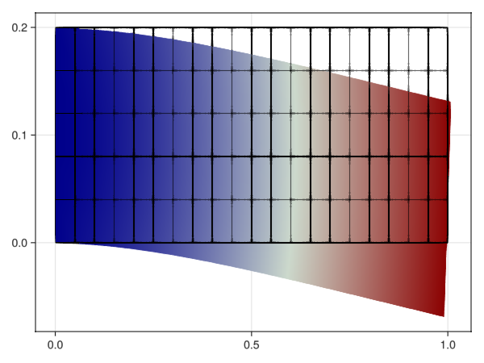

Linear elasticity
TODO
- Problem statement
- Hide call
- Use Voigt notation instead of using Tensors.jl?
import GalerkinToolkit as GT
import PartitionedSolvers as PS
import GLMakie as Makie
import ForwardDiff
import StaticArrays
import Tensors
using LinearAlgebra
domain = (0,1,0,0.2)
cells = (20,5)
D = length(cells)
mesh = GT.cartesian_mesh(domain,cells)
Ω = GT.interior(mesh)
Γ = GT.boundary(mesh;physical_names=["1-face-3"])
f = GT.analytical_field(x->StaticArrays.SVector(0,-1),Ω)
const E = 1
const ν = 0.33
const λ = (E*ν)/((1+ν)*(1-2*ν))
const μ = E/(2*(1+ν))
σ(ε) = λ*tr(ε)*one(ε) + 2*μ*ε
order = 2
V = GT.lagrange_space(Ω,order;shape=(D,),dirichlet_boundary=Γ)
uhd = GT.dirichlet_field(Float64,V)
dΩ = GT.measure(Ω,2*order)
∇ = ForwardDiff.jacobian
#TODO this function should be better in Tensors.jl
function symmetrize(m::StaticArrays.SMatrix{2,2})
T = eltype(m)
Tensors.SymmetricTensor{2,2,T}((m[1,1],0.5*(m[2,1]+m[1,2]),m[2,2]))
end
#TODO hide GT.call
ε(u,x) = GT.call(symmetrize,∇(u,x))
a(u,v) = GT.∫(x-> GT.call(Tensors.:⊡,ε(v,x),GT.call(σ,ε(u,x))), dΩ)
l(v) = GT.∫(x-> v(x)⋅f(x), dΩ)
p = GT.linear_problem(uhd,a,l)
s = PS.LinearAlgebra_lu(p)
s = PS.solve(s)
uh = GT.solution_field(uhd,s)
Makie.plot(Ω;color=x->norm(uh(x)),warp_by_vector=uh,warp_scale=0.002)
Makie.plot!(Ω;color=nothing,strokecolor=:black)MESA: error: ZINK: vkCreateInstance failed (VK_ERROR_INCOMPATIBLE_DRIVER)
glx: failed to create drisw screen
This page was generated using Literate.jl.